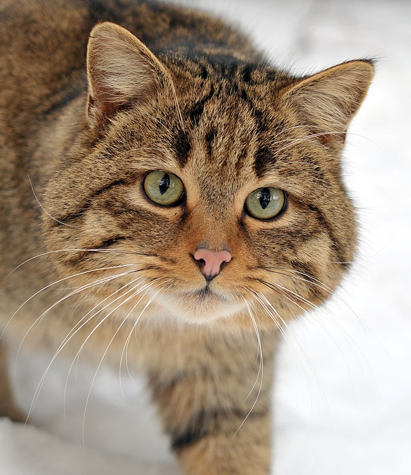

 Кіт(Felis) — рід хижих ссавців родини котових (Felidae). У деяких старіших системах класифікації до нього зараховували всіх представників малих кішок (Felinae), проте зараз безпосередньо до роду відносяться лише кілька видів невеликих тварин, що мешкають у Євразії та Африці.
| 1 | 2 | 3 |
| 4 | 5 | 6 |